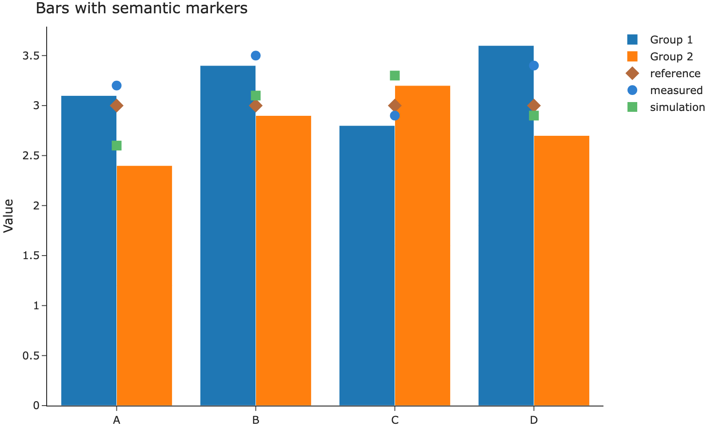

Source
from IPython.display import Image
Image("images/bars-semantic-markers.png")
Still Quarto’s presentation
These components render with Quarto’s own layout. Askr does not yet restyle them. They are here so that choice can be reviewed.
The left column is half of the content measure.
The right column is the other half. A narrow screen stacks them.
Images in this document come from Embla. The chart below is its bars-and-markers figure, saved here as a static image. Quarto’s folded cell keeps the embed source behind Source and shows the image underneath.
A page that only needs the picture, without a source disclosure, embeds it directly:
Quarto keeps two outputs from one cell and shows one of them. body.quarto-dark hides .light-content; body.quarto-light hides .dark-content. Askr’s dark stylesheet is marked data-mode="dark", so the header toggle adds and removes quarto-dark with the stylesheet.
Emit the light output first, then the dark output:
Light rendering
Dark rendering
The same order works for a Plotly figure: draw the light figure, then the dark figure, under #| renderings: [light, dark]. The figure colors are baked into each output. The toggle does not recolor a single picture.
flowchart LR Areas[Areas] --> Pages[Page List] Pages --> Article[Article] Article --> Sections[Section List]
The diagram above is the figure sample. This gallery does not ship a photograph.
The theme contains columns, a tabset, and this diagram inside the article width. A figure wider than the measure, or one whose labels are unreadably small, should be redrawn. Do not shrink the type to force a poster into the column.